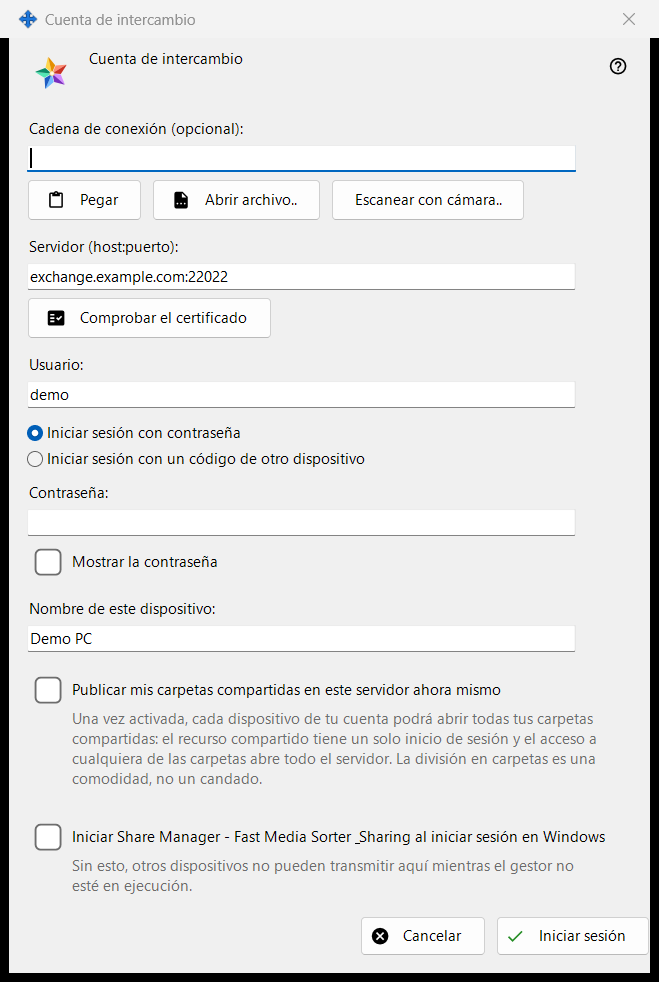
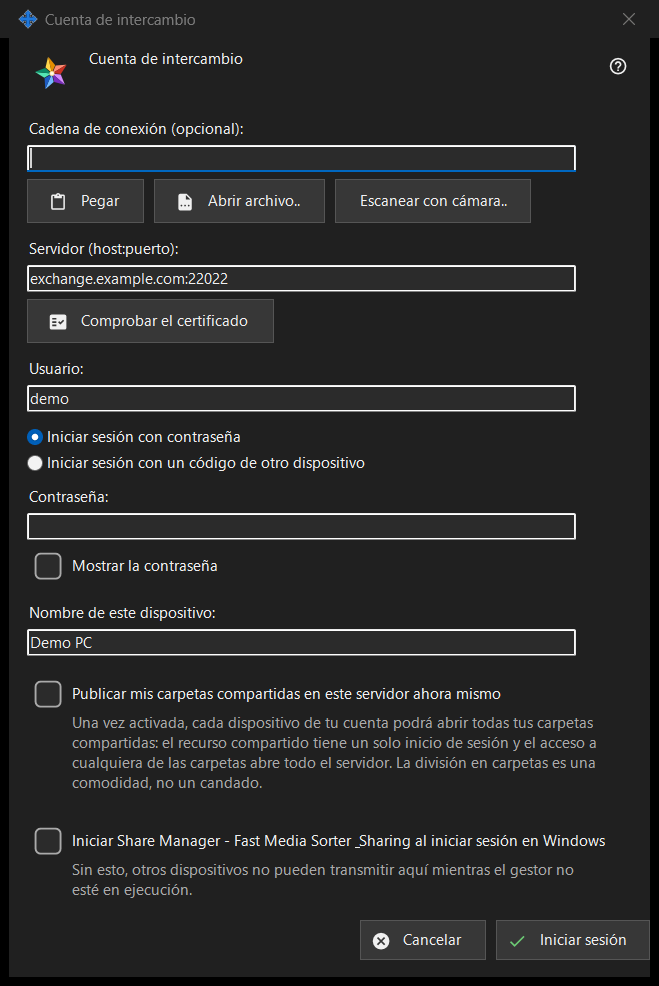

Cuenta de intercambio
Para qué sirve
Inicia sesión en este PC como dispositivo de una cuenta de un Media Exchange Server. Se abre desde el botón «Iniciar sesión..» de la página Cuenta de intercambio de los ajustes de Share Manager y desde «Publicar mediante un servidor de intercambio..», que la abre con la opción de publicar ya marcada.


En este orden
- Si quieres, pega, abre o escanea una cadena de conexión: rellena el servidor y el usuario.
- Pulsa «Comprobar el certificado» y, si el sistema no confía en él ni la cadena lo traía, compara la huella con la del operador y pulsa «Confiar en este certificado».
- Escribe el usuario y la contraseña o el código de emparejamiento.
- Define el nombre del dispositivo y las opciones.
- Pulsa «Iniciar sesión».
Los elementos
Cadena de conexión
«Cadena de conexión (opcional):» admite una cadena que pegas con «Pegar», cargas desde un archivo .fmsexch o una imagen QR con «Abrir archivo..», o lees con «Escanear con cámara..». Solo rellena el servidor y el usuario; nada se conecta hasta que pulses «Iniciar sesión». Una cadena con huella fija ese certificado, así que no hay nada que comparar a mano. Una cadena con invitación cambia la ventana al registro. Una cadena inutilizable recibe un rechazo de una línea.
Servidor y certificado
«Comprobar el certificado» se conecta a «Servidor (host:puerto):» y muestra «Huella del certificado del servidor:». Si el sistema confía en el certificado, no hace falta fijar nada. En caso contrario, compara la huella con la que te dio el operador del servidor y pulsa «Confiar en este certificado»; solo ese botón acepta un certificado que el sistema no conoce. Cambiar el texto del servidor hace olvidar la comprobación. Intro no hace nada hasta que se confía en un certificado, de modo que ninguna contraseña llega a un servidor que nadie ha avalado.
Usuario, contraseña y código de emparejamiento
Escribe «Usuario:» y elige «Iniciar sesión con contraseña» («Contraseña:», con «Mostrar la contraseña») o «Iniciar sesión con un código de otro dispositivo» («Código de emparejamiento:», emitido por otro dispositivo de la misma cuenta). El campo se vacía en el momento en que se envía su valor, sea cual sea el resultado; el dispositivo conserva solo un token, nunca la contraseña.
Registro por invitación
Cuando la cadena trae una invitación, las dos opciones de inicio de sesión dejan paso al registro: «La contraseña de la cuenta:» y «Contraseña una vez más:» fijan la nueva contraseña, que debe cumplir la regla mostrada (al menos 10 caracteres con una letra latina mayúscula, una minúscula y un dígito), y el botón pasa a decir «Crear la cuenta».
Nombre del dispositivo y opciones
«Nombre de este dispositivo:» (hasta 64 caracteres) empieza con el nombre del equipo. «Publicar mis carpetas compartidas en este servidor ahora mismo» está desactivada salvo que hayas llegado por «Publicar mediante un servidor de intercambio..»; una vez activada, todos los dispositivos de tu cuenta pueden abrir todas tus carpetas compartidas, porque el uso compartido tiene un solo usuario. La última opción inicia Share Manager cuando inicias sesión en Windows (desactivada de forma predeterminada), para que otros dispositivos puedan retransmitir a este PC.
Un servidor a la vez
Un dispositivo pertenece a un solo servidor. Al iniciar sesión en otro se pregunta si se abandona el actual, y la publicación en el servidor anterior se detiene. Tras un contacto fallido, el botón «¿Por qué no conecta?..» abre la prueba de conexión.
Ajustes del gestor · Ajustes de uso compartido SFTP · Ajustes del servidor de intercambio